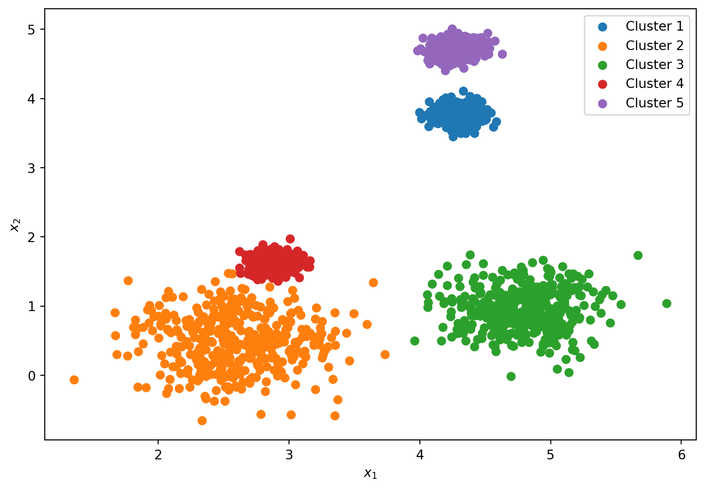

Mathematics has many broad topics, but one of the most prevalent topics in machine learning is probability. Probability theory contains topics such as discrete and continuous random variables, probability distributions, and statistics.
One of the more realistic machine learning based scenarios to utilize probability theory methods on is random data. As seen in Figure 1, a set of 5 “blobs” has been generated with random centers and varying degrees of standard deviations from said center. This was the same approach taken for my blog post on Clustering.
Setup code
import osimport warningswarnings.filterwarnings('ignore')import numpy as npimport pandas as pdfrom scipy import statsfrom matplotlib import pyplot as pltimport scipy.statsfrom scipy.stats import normfrom sklearn.cluster import KMeansfrom sklearn.datasets import make_blobsfrom sklearn.mixture import GaussianMixture
Figure 1: Plot of random data contained to five blobs
When working with non-normal or non-uniform data, it is hard to fit a normal distribution curve to it. Utilizing a kernel density estimation (KDE) is one way to smooth as well as estimate the probability density function (PDF) of a random variable based on kernels as weights. The kernel density estimator is seen in the below equation:
As seen in Figure 2, the plot of the kde function on the above data closely follows the trend of the histogram for both x1 and x2 variables, which were generated randomly.
Machine learning techniques commonly will use clustering to group data points together and allows the user to see the similarity of their data. One algorithm that is used for clustering is Gaussian Mixtures Model (GMM) which uses probability for clustering and density estimation, and is based on Gaussian distribution curves. Since this blog post is about probability theory, we will utilize this specific method.
Since Gaussian distributions heavily depend on mean and variance of each point, GMM utilizes a statistical algorithm called Expectation-Maximization for calculating the mean and variance value of each Gaussian or cluster. The algorithm first calculates the probability that a point belongs to each cluster, then iterates the mean and covariance matrix to maximize the log likelihood value.
gm = GaussianMixture(n_components=5, n_init=10, random_state=42)gm.fit(x)print('Gaussian Mixture model converged in %d iterations with a lower bound\non the log likelihood of the best fit of EM of %3.3f'% (gm.n_iter_,gm.lower_bound_))labels=gm.predict(x)fig, axs = plt.subplots(figsize =(9, 6))plt.scatter(x[:,0][labels==0],x[:,1][labels==0])plt.scatter(x[:,0][labels==1],x[:,1][labels==1])plt.scatter(x[:,0][labels==2],x[:,1][labels==2])plt.scatter(x[:,0][labels==3],x[:,1][labels==3])plt.scatter(x[:,0][labels==4],x[:,1][labels==4])plt.legend(['Cluster 1','Cluster 2','Cluster 3','Cluster 4','Cluster 5'],loc='best')plt.xlabel('$x_{1}$')plt.ylabel('$x_{2}$')plt.show()
Gaussian Mixture model converged in 5 iterations with a lower bound
on the log likelihood of the best fit of EM of -0.785

Figure 3: Gaussian Mixture clustering results
The Gaussian Mixture function from sklearn allows one to see the probabilities that a certain point is in each of the 5 clusters (in this example). Below, you can see a table with the probabilities of several datapoints and their respective clusters. It’s interesting to note that not every point is 100% certain with this algorithm, there are several points that have < 1.0 probabilities, meaning that it might have a 95% probability of it being in one cluster, and a 5% probability of being in another cluster. Since 95% > 5%, it assumes it is in the higher probability cluster.